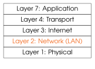
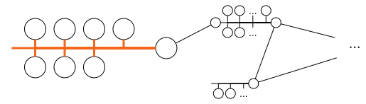
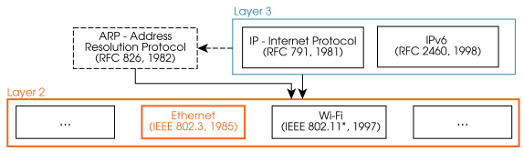

[7] Capa 2: comunicación en red (LAN)¶


Capacidades¶
Los protocolos de capa 2 permiten que varios dispositivos intercambien mensajes y se identifiquen entre sí dentro de una red local (LAN, red de área local). No se puede contactar directamente con los dispositivos de fuera de la LAN mediante protocolos de capa 2.
La capa 2 abstrae a las capas superiores (incluidas las aplicaciones de usuario) de los detalles concretos del hardware conectado. Esto hace más fácil (léase: más barato) escribir el código una vez y ejecutarlo en cualquier sitio.
Los mensajes de capa 2 tienen una longitud limitada. La cantidad máxima de datos de payload (carga útil) que se pueden insertar en un protocolo de capa 2 se denomina unidad máxima de transmisión (MTU), p. ej. \(1500\) bytes en Ethernet.
Algunos protocolos de capa 2 también pueden proporcionar autenticación de usuario y protección criptográfica; Wi-Fi es un ejemplo destacado, aunque las redes cableadas también pueden emplear, p. ej. IEEE 802.1X.

Protocolos¶
Se han definido y se siguen definiendo muchos protocolos dentro de la capa 2. Los más importantes en la actualidad:
-
Ethernet (IEEE 802.3), que se trata en Section 7.2.
-
Wi-Fi (p. ej. IEEE 802.11be, alias Wi-Fi 7, de 2024).
Dentro de TCP/IP, la capa 2 encapsula las siguientes PDU de protocolo (ambas se tratan en el Capítulo 8):
-
Datagramas IPv4 e IPv6.
-
Mensajes ARP.
Nota
La orden ip link muestra y permite configurar tus interfaces, incluida la dirección MAC.
Tu sistema operativo suele asignar automáticamente los nombres internos de las interfaces según su tipo, p. ej. eth0 o wlan1. Normalmente se pueden renombrar las interfaces, porque los nombres de interfaz no forman parte de TCP/IP; se usan exclusivamente dentro de ese sistema operativo.
[7.1] Direccionamiento de capa 2¶
En la mayoría de las tecnologías de LAN, las direcciones de capa 2 son identificadores numéricos únicos para cada dispositivo dentro de la LAN. El tipo más frecuente son las direcciones MAC de Ethernet (técnicamente EUI-48), que ocupan \(6\) bytes (es decir, \(48\) bits). También se usan fuera de Ethernet, p. ej. en Wi-Fi y Bluetooth.
Las direcciones MAC se presentan a las personas habitualmente en el siguiente formato:
01:23:45:67:89:ab. Algunas direcciones tienen un significado especial y no son identificadores válidos de dispositivo. Por ejemplo, ff:ff:ff:ff:ff:ff es la dirección de broadcast (difusión), que significa “todos los de la LAN”. Además, 00:00:00:00:00:00 se usa para representar una dirección MAC desconocida (consulta RFC 9542 para una descripción completa de las direcciones MAC reservadas, incluidas las de multicast (envío a un grupo)).
El hardware de red viene con una dirección MAC integrada, única y predefinida, lista para usar. Las MAC de los dispositivos se pueden configurar a nivel de sistema operativo, pero permanecen constantes mientras están en uso.
[7.2] Protocolo Ethernet de capa 2¶
[7.2.1] Formato de paquete¶
La capa 2 de Ethernet define el siguiente formato, usado en todos los mensajes. Los paquetes de este tipo se denominan frames (tramas):
-
MAC de destino: la dirección MAC del dispositivo de destino, o
ff:ff:ff:ff:ff:ffpara broadcast. -
MAC de origen: la MAC del dispositivo que envía el frame.
-
Tipo de payload: identificador del protocolo encapsulado en el payload,
p. ej.0x0800\(\rightarrow\) IPv4,0x86DD\(\rightarrow\) IPv6, y0x0806\(\rightarrow\) ARP. A veces se le llama EtherType. -
Payload: contenido que se solicita enviar, p. ej. por IPv4 o ARP. La longitud máxima de este campo, la MTU, es de \(1500\) bytes en ethernet.
Ejercicio 7.1
-
¿Cuántas direcciones MAC diferentes hay en Ethernet (incluidos los bloques reservados)?
-
¿Son suficientes para que cada dispositivo de la Tierra con capacidad de conectarse a internet tenga una MAC única?
Ejercicio 7.2
¿Es válido el siguiente frame?
c2 21 90 15 bc b6 42 40 e5 f7 5e 32 42 77 57
03 ca 27 6b 1f 97 e9 02 7f 80 fa 8b 61 59 2a
81 b6 73 b0 b4 e1 75 4f ef 40 dd 9f 3c 48 67
[7.2.2] Funcionamiento¶
Los mensajes dentro de una LAN Ethernet se envían normalmente en modo unicast (envío a un único destinatario), es decir, son mensajes de uno a uno. Esto permite que los switches (conmutadores) minimicen el consumo de energía y de ancho de banda. En unicast, el dispositivo de origen debe conocer la MAC del destino.
Ethernet también admite el broadcast a todos los nodos de la LAN. En este caso, la dirección MAC de destino debe ser ff:ff:ff:ff:ff:ff. Cuando un dispositivo recibe un frame, lo descarta salvo que el campo de MAC de destino del frame sea idéntico a su propia dirección MAC, o sea el de broadcast.
Un nodo también descartará un frame con un campo de tipo de payload (EtherType) no soportado. Si el tipo de payload sí está soportado, se usa para decidir qué parte del sistema operativo recibe el mensaje, p. ej. la pila IPv4 o el subsistema ARP.
Ejercicio 7.3
Siguiendo con el ejemplo de la figura anterior, la tarjeta de red del nodo B recibe un frame que empieza con los siguientes bytes. ¿Debería aceptarlo B?
00 11 22 00 0a ff ff ff ff ff ff DD …
Ejercicio 7.4
Los siguientes scripts ejemplifican cómo enviar y recibir frames Ethernet en crudo. El cliente envía \(5\) frames idénticos de EtherType 0x1234 y después termina. El servidor espera hasta recibir \(5\) frames Ethernet de ese tipo (se comprueba en las líneas 12-13) y después termina.
-
Cambia la dirección MAC y el nombre de interfaz del cliente por los tuyos.
-
Haz que el servidor rechace los frames que no vayan dirigidos a él.
-
Amplía estos scripts para implementar una aplicación sencilla con capacidades de LAN.
Ejemplos sugeridos:-
Un servicio de eco de capa 2 que distinga entre peticiones y respuestas.
-
Un chat peer-to-peer (par a par) de capa 2 que incluya el apodo del origen en todos los mensajes.
-
Un servicio de calculadora de capa 2 que soporte operaciones aritméticas básicas
(+,-,*, división entera//, opcionalmente división/).
-
-
¿Qué falta para que tu aplicación pueda conectarse al resto de Internet más allá de tu LAN?
snippets/ethernetclient.py
import socket
interface_name = "wlp5s0" # Needs manual configuration
source_mac = bytes([0x00, 0x11, 0x22, 0x33, 0x44, 0x55])
destination_mac = bytes([0xff, 0xff, 0xff, 0xff, 0xff, 0xff])
packet_type = bytes([0x12, 0x34])
payload_data = bytes([0x78, 0x6f, 0x69, 0x20, 0x75, 0x61, 0x62])
# This socket sends Layer 2 packets directly.
s = socket.socket(family=socket.AF_PACKET,
type=socket.SOCK_RAW,
proto=socket.ntohs(socket.ETH_P_ALL))
s.bind((interface_name, 0))
for i in range(5):
frame = destination_mac + source_mac + packet_type + payload_data
s.send(frame)
print(f"Sent frame {i + 1}/5: {len(frame)=}, {payload_data=}.")
Sent frame 1/5: len(frame)=21, payload_data=b'xoi uab'.
Sent frame 2/5: len(frame)=21, payload_data=b'xoi uab'.
Sent frame 3/5: len(frame)=21, payload_data=b'xoi uab'.
Sent frame 4/5: len(frame)=21, payload_data=b'xoi uab'.
Sent frame 5/5: len(frame)=21, payload_data=b'xoi uab'.
snippets/ethernetserver.py
import socket
interface_name = "wlp5s0" # Needs manual configuration
# This socket receives Layer 2 packets directly.
s = socket.socket(family=socket.AF_PACKET,
type=socket.SOCK_RAW,
proto=socket.ntohs(socket.ETH_P_ALL))
s.bind((interface_name, 0))
valid_frames = 0
while valid_frames < 5:
frame = s.recv(1514)
if frame[12:14] != bytes([0x12, 0x34]):
continue
valid_frames += 1
print(f"Received frame {valid_frames + 1}/5, {len(frame)} bytes. "
f"Payload: {frame[14:]!r}")
Received frame 2/5, 21 bytes. Payload: b'xoi uab'
Received frame 3/5, 21 bytes. Payload: b'xoi uab'
Received frame 4/5, 21 bytes. Payload: b'xoi uab'
Received frame 5/5, 21 bytes. Payload: b'xoi uab'
Received frame 6/5, 21 bytes. Payload: b'xoi uab'
Nota
Tendrás que ejecutar estos scripts con privilegios, p. ej. con sudo. Como alternativa, puedes añadir permanentemente las capacidades CAP_NET_RAW a tu binario de python con
sudo setcap cap_net_raw+ep ./venv/bin/python.
Después de eso, puedes ejecutar ./venv/bin/python script.py directamente sin sudo.